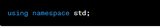

Rules in writing C++ program
What are the rules tha guide C++ Programming Language
Writing a C++ program involves following a set of rules and conventions to ensure your code
is readable, maintainable, and error-free. Here are some fundamental rules and guidelines for
writing C++ programs:
1. Include Necessary Headers: Include the appropriate header files at the beginning of your program
to access standard C++ libraries and features. For example:

2. Use Namespaces: Use the using keyword or specify the namespace when using library elements to avoid naming
conflicts and improve code readability. For example:

3. Main Function: Every C++ program must have a main function, which serves as the entry point for execution.
It has a specific signature:
4. Comments: Use comments to document your code, explaining its purpose and important details. C++ supports both
single-line and multi-line comments:
5. Indentation: Use consistent and readable indentation to make your code structure clear. Most commonly, a four-space indentation is used.
6. Naming Conventions: Follow naming conventions for variables, functions, and classes to enhance code readability. Common conventions include:
i. Variable names: Use meaningful and descriptive names, typically in camelCase or snake_case (e.g., myVariable or my_variable).
ii. Function names: Use verbs or verb phrases that describe the function's action (e.g., calculateTotal()).
iii. Class names: Use nouns or noun phrases in CamelCase (e.g., Person or StudentRecord).
7. Whitespace: Use whitespace to improve code readability. Add spaces around operators and after commas in
function arguments:
8. Limit Line Length: Keep your lines of code reasonably short (commonly 80-100 characters) to prevent horizontal scrolling and improve code readability.
9. Consistent Coding Style: Choose a coding style and stick with it consistently throughout your program. If you're working on a team, follow the team's agreed-upon coding style.
10. Error Handling: Implement error handling mechanisms, such as exception handling, to gracefully handle unexpected errors and failures.
11. Use Constants: When appropriate, use constants (declared with const) to represent fixed values in your code. This enhances code clarity and makes it easier to maintain.
12. Avoid Global Variables: Minimize the use of global variables, as they can make code less maintainable and harder to debug. Prefer local variables with limited scope.
13. Function Modularity: Break your code into modular functions or classes, each with a specific responsibility. This promotes code reusability and makes debugging easier.
14. Header and Implementation Files: For larger projects, separate the declaration of classes and functions in header files (.h or .hpp) from their implementations in source files (.cpp).
15. Documentation: Provide documentation or comments that describe the purpose and usage of your functions and classes. Consider using a documentation generation tool like Doxygen.
16. Testing: Test your code thoroughly to catch and fix errors early. Automated testing frameworks like Google Test can be helpful.
17. Version Control: Use version control systems like Git to track changes and collaborate with others on your code.
18. Code Review: Consider having your code reviewed by peers to get feedback and improve code quality.